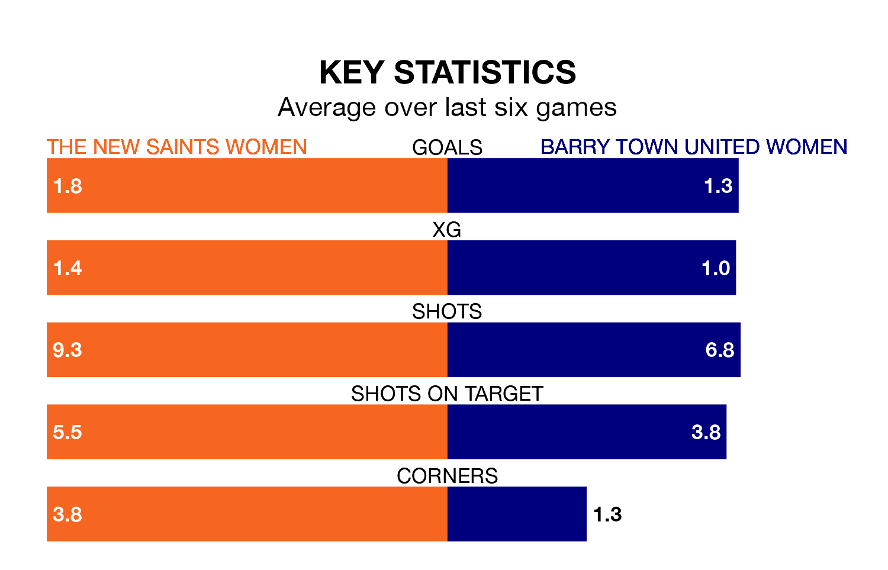

Relegation candidates Barry Town United Women face a challenge away against high-flying The New Saints Women on Sunday.
Barry Town United Women are fifth in the Welsh Premier Women's League table, and have picked up six wins and one draw in their 18 games to date.
The New Saints, meanwhile, are fourth in the standings with 23 points, having won seven and drawn two, and are 23 points behind table-toppers Cardiff City.
With 22 goals in 18 games so far this season, Barry Town United are the league's third-lowest scorers with 1.2 goals per game. And they are conceding more than average, letting in 40 goals at a rate of 2.2 per game.
The New Saints, meanwhile, are above average scorers, with 2.2 goals per game, compared to a league average of 1.8. They have conceded 2.6 goals per game.
In the last 10 years, The New Saints and Barry Town United have played each other on nine occasions. The New Saints won three of them and Barry Town United six.
On average, the New Saints scored 1.7 goals and Barry Town United 2.7 in those matches.
Their last meeting was on March 17, when Barry Town United won 3-0 at home.
The New Saints are in mixed form in the Welsh Premier Women's League, with two wins and a draw from their last six games.
And also with two wins and a draw over that period, the visitors' form is identical – they have both taken seven points from 18.
The New Saints' last match was on Wednesday, a 4-0 win against Pontypridd Town, with getting the goals for the New Saints.
Barry Town United lost 2-0 against Cardiff Metropolitan last time out, also on Wednesday.
Updated: 10:31 (UTC), 31/03/24